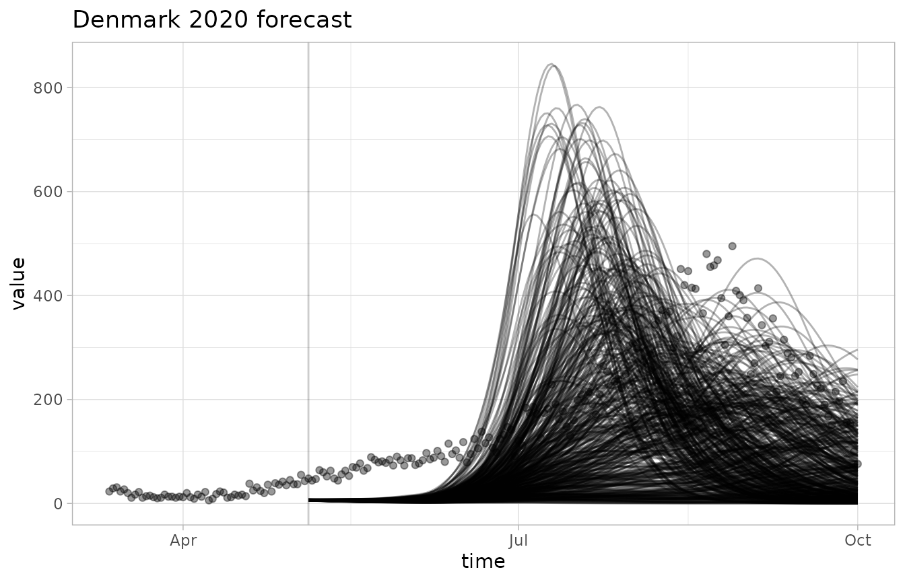
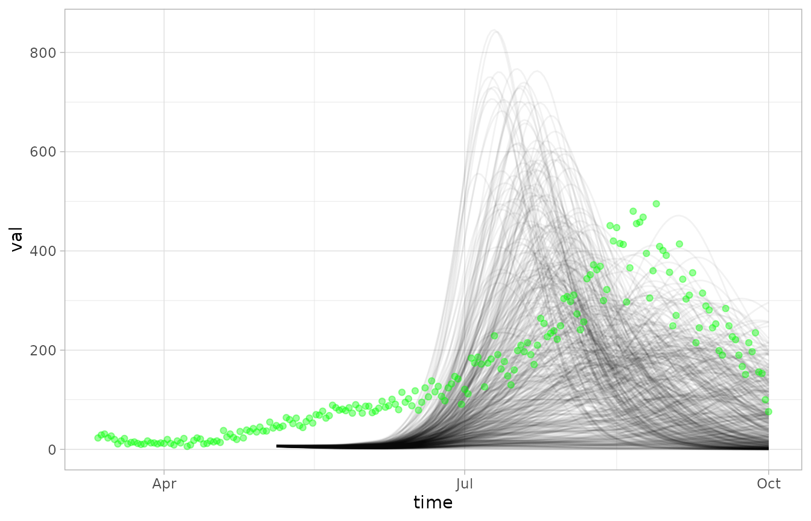
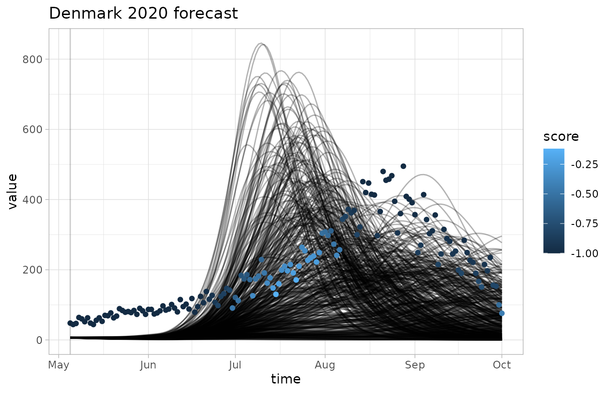
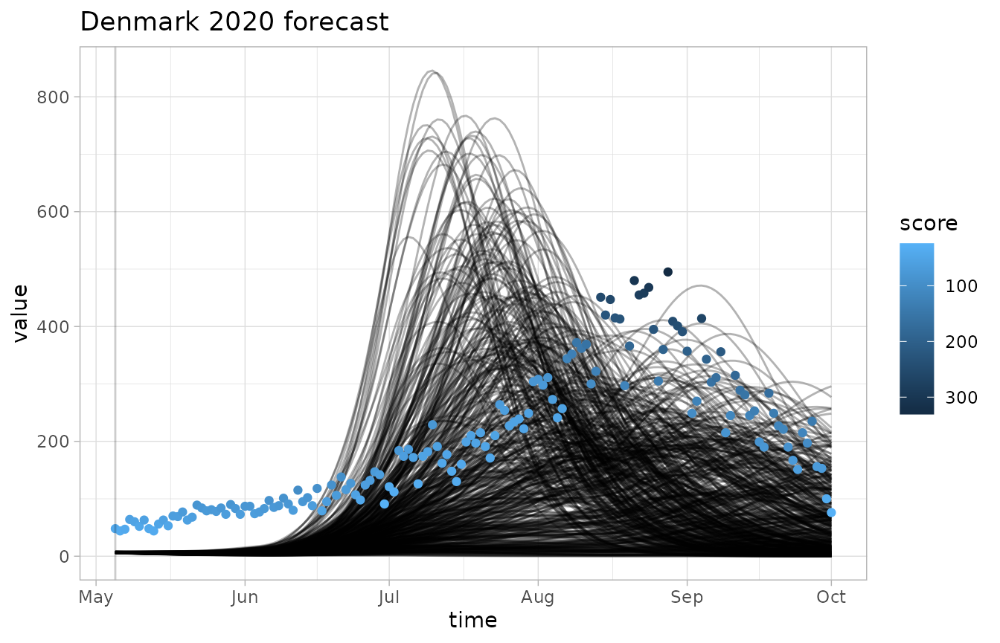
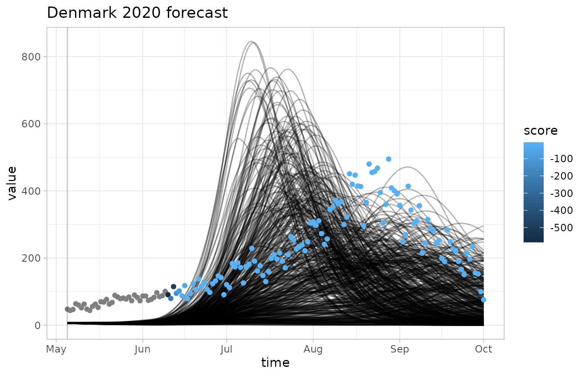
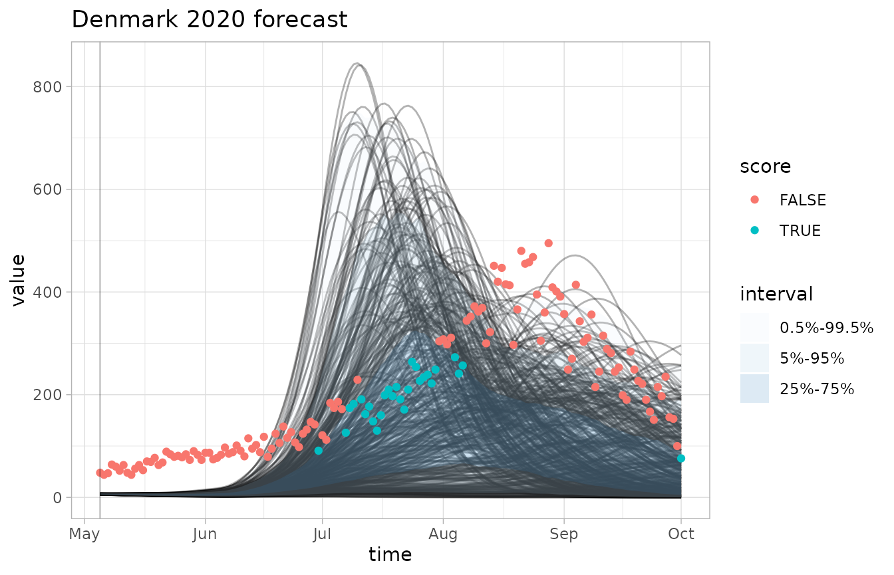

Formatting
Here is a forecast that was created by epidemiologists in Denmark in 2020.
str(denmark2020ens)
#> List of 500
#> $ : num [1:150] 7.42 7.39 7.37 7.36 7.34 ...
#> $ : num [1:150] 6.87 6.82 6.79 6.76 6.74 ...
#> $ : num [1:150] 6.12 5.88 5.64 5.41 5.2 ...
#> $ : num [1:150] 6.82 6.74 6.66 6.59 6.53 ...
#> $ : num [1:150] 6.63 6.42 6.22 6.03 5.84 ...
#> $ : num [1:150] 6.7 6.62 6.55 6.48 6.42 ...
#> $ : num [1:150] 5.89 5.69 5.49 5.31 5.13 ...
#> $ : num [1:150] 5.93 5.73 5.53 5.35 5.17 ...
#> $ : num [1:150] 6.23 6.07 5.93 5.79 5.65 ...
#> $ : num [1:150] 6.69 6.55 6.43 6.31 6.19 ...
#> $ : num [1:150] 5.89 5.64 5.41 5.18 4.96 ...
#> $ : num [1:150] 6.54 6.46 6.4 6.34 6.29 ...
#> $ : num [1:150] 6.78 6.73 6.69 6.65 6.62 ...
#> $ : num [1:150] 6 5.75 5.52 5.3 5.09 ...
#> $ : num [1:150] 6.68 6.57 6.46 6.37 6.27 ...
#> $ : num [1:150] 7.05 6.85 6.66 6.47 6.29 ...
#> $ : num [1:150] 6.84 6.77 6.71 6.66 6.61 ...
#> $ : num [1:150] 5.6 5.43 5.28 5.14 5.01 ...
#> $ : num [1:150] 6.18 6.05 5.93 5.81 5.7 ...
#> $ : num [1:150] 6.24 6.17 6.1 6.04 5.99 ...
#> $ : num [1:150] 5.54 5.3 5.06 4.84 4.62 ...
#> $ : num [1:150] 7.3 7.31 7.32 7.34 7.37 ...
#> $ : num [1:150] 7.25 7.13 7.01 6.9 6.79 ...
#> $ : num [1:150] 7.24 7.22 7.22 7.22 7.22 ...
#> $ : num [1:150] 6.3 6.05 5.8 5.56 5.34 ...
#> $ : num [1:150] 7.22 7.05 6.88 6.72 6.56 ...
#> $ : num [1:150] 7.11 6.94 6.77 6.61 6.45 ...
#> $ : num [1:150] 6.71 6.64 6.57 6.52 6.47 ...
#> $ : num [1:150] 7.18 7.15 7.12 7.1 7.07 ...
#> $ : num [1:150] 6.62 6.56 6.51 6.47 6.43 ...
#> $ : num [1:150] 6.37 6.23 6.11 5.99 5.87 ...
#> $ : num [1:150] 6.73 6.59 6.46 6.33 6.21 ...
#> $ : num [1:150] 6.25 6.11 5.98 5.86 5.75 ...
#> $ : num [1:150] 7.35 7.39 7.43 7.48 7.53 ...
#> $ : num [1:150] 6.37 6.14 5.91 5.69 5.48 ...
#> $ : num [1:150] 7.01 6.83 6.65 6.48 6.31 ...
#> $ : num [1:150] 6.36 6.24 6.14 6.04 5.95 ...
#> $ : num [1:150] 6.9 6.81 6.71 6.63 6.54 ...
#> $ : num [1:150] 6.56 6.43 6.3 6.18 6.07 ...
#> $ : num [1:150] 7.03 6.85 6.68 6.51 6.35 ...
#> $ : num [1:150] 7 6.94 6.89 6.84 6.8 ...
#> $ : num [1:150] 7.45 7.39 7.34 7.29 7.24 ...
#> $ : num [1:150] 6.58 6.44 6.31 6.18 6.07 ...
#> $ : num [1:150] 6.27 6.15 6.03 5.91 5.8 ...
#> $ : num [1:150] 6.47 6.32 6.18 6.04 5.92 ...
#> $ : num [1:150] 6.73 6.53 6.34 6.15 5.96 ...
#> $ : num [1:150] 6.38 6.25 6.14 6.04 5.94 ...
#> $ : num [1:150] 5.92 5.67 5.43 5.2 4.97 ...
#> $ : num [1:150] 6.62 6.53 6.44 6.35 6.27 ...
#> $ : num [1:150] 6.19 6 5.82 5.66 5.5 ...
#> $ : num [1:150] 6.87 6.82 6.77 6.73 6.69 ...
#> $ : num [1:150] 6.3 6.13 5.97 5.82 5.68 ...
#> $ : num [1:150] 5.8 5.58 5.37 5.17 4.98 ...
#> $ : num [1:150] 7.36 7.28 7.2 7.13 7.07 ...
#> $ : num [1:150] 6.07 5.85 5.63 5.43 5.22 ...
#> $ : num [1:150] 6.31 6.16 6.01 5.88 5.75 ...
#> $ : num [1:150] 5.84 5.65 5.47 5.3 5.13 ...
#> $ : num [1:150] 6.97 6.8 6.63 6.46 6.3 ...
#> $ : num [1:150] 6.96 6.84 6.73 6.62 6.51 ...
#> $ : num [1:150] 6.47 6.47 6.47 6.49 6.51 ...
#> $ : num [1:150] 6.7 6.61 6.53 6.46 6.39 ...
#> $ : num [1:150] 6.75 6.68 6.61 6.54 6.48 ...
#> $ : num [1:150] 6.83 6.75 6.68 6.62 6.55 ...
#> $ : num [1:150] 6.42 6.29 6.17 6.06 5.95 ...
#> $ : num [1:150] 7.03 7.02 7.02 7.03 7.05 ...
#> $ : num [1:150] 6.16 5.94 5.73 5.54 5.35 ...
#> $ : num [1:150] 7.08 6.97 6.87 6.77 6.67 ...
#> $ : num [1:150] 5.9 5.71 5.53 5.35 5.19 ...
#> $ : num [1:150] 6.17 6 5.84 5.69 5.55 ...
#> $ : num [1:150] 6.75 6.54 6.33 6.13 5.94 ...
#> $ : num [1:150] 6.88 6.83 6.79 6.75 6.73 ...
#> $ : num [1:150] 6.47 6.3 6.15 6 5.86 ...
#> $ : num [1:150] 7.01 6.97 6.93 6.9 6.88 ...
#> $ : num [1:150] 6.13 6.08 6.05 6.02 6.01 ...
#> $ : num [1:150] 6.29 6.12 5.96 5.8 5.66 ...
#> $ : num [1:150] 6.31 6.11 5.91 5.73 5.55 ...
#> $ : num [1:150] 7.18 7.15 7.13 7.11 7.1 ...
#> $ : num [1:150] 6.14 6.04 5.95 5.87 5.79 ...
#> $ : num [1:150] 7.82 7.67 7.51 7.37 7.22 ...
#> $ : num [1:150] 6.92 6.78 6.64 6.52 6.4 ...
#> $ : num [1:150] 5.64 5.51 5.4 5.29 5.19 ...
#> $ : num [1:150] 7.73 7.62 7.51 7.4 7.29 ...
#> $ : num [1:150] 7.28 7.22 7.16 7.11 7.05 ...
#> $ : num [1:150] 6.29 6.09 5.88 5.69 5.5 ...
#> $ : num [1:150] 7.13 7.14 7.15 7.18 7.2 ...
#> $ : num [1:150] 6.28 6.07 5.87 5.68 5.5 ...
#> $ : num [1:150] 6.69 6.58 6.48 6.38 6.3 ...
#> $ : num [1:150] 7.74 7.54 7.35 7.16 6.97 ...
#> $ : num [1:150] 6.53 6.35 6.17 6.01 5.85 ...
#> $ : num [1:150] 6.28 6.1 5.93 5.77 5.62 ...
#> $ : num [1:150] 5.52 5.33 5.15 4.98 4.82 ...
#> $ : num [1:150] 6.22 6.13 6.04 5.97 5.9 ...
#> $ : num [1:150] 5.48 5.32 5.18 5.05 4.92 ...
#> $ : num [1:150] 5.48 5.3 5.13 4.97 4.82 ...
#> $ : num [1:150] 6.55 6.39 6.23 6.08 5.93 ...
#> $ : num [1:150] 7.24 7.19 7.16 7.13 7.1 ...
#> $ : num [1:150] 6.76 6.65 6.54 6.43 6.33 ...
#> $ : num [1:150] 7.34 7.34 7.35 7.37 7.39 ...
#> $ : num [1:150] 7.03 7.06 7.1 7.14 7.2 ...
#> [list output truncated]It is an ensemble of 500 different realizations of a simulation, with 150 time points each.
To use this data with casteval we need to provide time points.
library(lubridate)
#>
#> Attaching package: 'lubridate'
#> The following objects are masked from 'package:base':
#>
#> date, intersect, setdiff, union
times <- seq(ymd("2020-05-05"), ymd("2020-10-01"), by="days")Now we can create a forecast object.
fc <- create_forecast(
list(time=times, vals=denmark2020ens),
name="Denmark 2020 forecast",
forecast_time=ymd("2020-05-05")
)
fc
#> $name
#> [1] "Denmark 2020 forecast"
#>
#> $forecast_time
#> [1] "2020-05-05"
#>
#> $data
#> # A tibble: 75,000 × 3
#> time sim val
#> <date> <int> <dbl>
#> 1 2020-05-05 1 7.42
#> 2 2020-05-06 1 7.39
#> 3 2020-05-07 1 7.37
#> 4 2020-05-08 1 7.36
#> 5 2020-05-09 1 7.34
#> 6 2020-05-10 1 7.33
#> 7 2020-05-11 1 7.31
#> 8 2020-05-12 1 7.30
#> 9 2020-05-13 1 7.29
#> 10 2020-05-14 1 7.28
#> # ℹ 74,990 more rowsHere is a made-up set of observations over roughly the same time period.
obs <- denmark2020obs
obs
#> # A tibble: 204 × 2
#> time val_obs
#> <date> <dbl>
#> 1 2020-03-12 23
#> 2 2020-03-13 29
#> 3 2020-03-14 31
#> 4 2020-03-15 23
#> 5 2020-03-16 27
#> 6 2020-03-17 20
#> 7 2020-03-18 11
#> 8 2020-03-19 17
#> 9 2020-03-20 22
#> 10 2020-03-21 11
#> # ℹ 194 more rowsThese simply consist of a time column and a
val_obs column.
Visualizing
Let’s visualize the forecast and the observations.
plot_forecast(fc, obs)
Since there are so many realizations, the observations are kind of hard to see. We can tweak the opacity and colors using the modular plotting functions.
NULL |> plot_ensemble(fc, alpha=0.05) |> plot_observations(obs, colour="green")
Scoring
We can pass the data to any scoring function we like.
bias(fc, obs)
#> [1] -0.8089333
log_score(fc, obs, at=ymd("2020-10-01"))
#> [1] -5.570019
crps(fc, obs, after=60)
#> [1] 63.48468
pairs <- list(c(.5,99.5), c(5,95), c(25,75))
accuracy(fc, obs, quant_pairs=pairs)
#> Scoring accuracy using quantile pairs c(0.5, 99.5), c(5, 95), c(25, 75)
#> [1] 0.6066667 0.4000000 0.1866667The default behaviour is to summarize the data into a single score.
To get the unsummarized scores, we pass
summarize=FALSE.
bias(fc, obs, summarize=FALSE)
#> # A tibble: 150 × 3
#> time val_obs score
#> <date> <dbl> <dbl>
#> 1 2020-05-05 48 -1
#> 2 2020-05-06 44 -1
#> 3 2020-05-07 47 -1
#> 4 2020-05-08 64 -1
#> 5 2020-05-09 60 -1
#> 6 2020-05-10 52 -1
#> 7 2020-05-11 63 -1
#> 8 2020-05-12 48 -1
#> 9 2020-05-13 44 -1
#> 10 2020-05-14 56 -1
#> # ℹ 140 more rows
crps(fc, obs, after=60, summarize=FALSE)
#> # A tibble: 150 × 3
#> time score val_obs
#> <date> <dbl> <dbl>
#> 1 2020-05-05 41.1 48
#> 2 2020-05-06 37.2 44
#> 3 2020-05-07 40.3 47
#> 4 2020-05-08 57.4 64
#> 5 2020-05-09 53.4 60
#> 6 2020-05-10 45.5 52
#> 7 2020-05-11 56.6 63
#> 8 2020-05-12 41.7 48
#> 9 2020-05-13 37.7 44
#> 10 2020-05-14 49.8 56
#> # ℹ 140 more rows
log_score(fc, obs, at=ymd("2020-10-01"), summarize=FALSE)
#> # A tibble: 150 × 3
#> time score val_obs
#> <date> <dbl> <dbl>
#> 1 2020-05-05 -Inf 48
#> 2 2020-05-06 -Inf 44
#> 3 2020-05-07 -Inf 47
#> 4 2020-05-08 -Inf 64
#> 5 2020-05-09 -Inf 60
#> 6 2020-05-10 -Inf 52
#> 7 2020-05-11 -Inf 63
#> 8 2020-05-12 -Inf 48
#> 9 2020-05-13 -Inf 44
#> 10 2020-05-14 -Inf 56
#> # ℹ 140 more rows
accuracy(fc, obs, quant_pairs=pairs, summarize=FALSE)
#> Scoring accuracy using quantile pairs c(0.5, 99.5), c(5, 95), c(25, 75)
#> # A tibble: 450 × 4
#> time val_obs score pair
#> <date> <dbl> <lgl> <int>
#> 1 2020-05-05 48 FALSE 1
#> 2 2020-05-06 44 FALSE 1
#> 3 2020-05-07 47 FALSE 1
#> 4 2020-05-08 64 FALSE 1
#> 5 2020-05-09 60 FALSE 1
#> 6 2020-05-10 52 FALSE 1
#> 7 2020-05-11 63 FALSE 1
#> 8 2020-05-12 48 FALSE 1
#> 9 2020-05-13 44 FALSE 1
#> 10 2020-05-14 56 FALSE 1
#> # ℹ 440 more rowsNote how for accuracy(), the score column is a boolean,
not a number.
Custom scoring
Let’s say we want to modify accuracy() so that it
returns the rate at which numbers fall outside a quantile
interval. We can define our own scoring function to wrap
accuracy(), and then use it like any other.
accuracy_inverse <- function(fcst, obs, summarize=TRUE, quant_pairs=NULL) {
scores <- accuracy(fcst, obs, summarize=summarize, quant_pairs=quant_pairs)
if(summarize) {
1 - scores
} else {
scores |> dplyr::mutate(score=!score)
}
}
accuracy_inverse(fc, obs, quant_pairs=pairs)
#> Scoring accuracy using quantile pairs c(0.5, 99.5), c(5, 95), c(25, 75)
#> [1] 0.3933333 0.6000000 0.8133333
accuracy_inverse(fc, obs, quant_pairs=pairs, summarize=FALSE)
#> Scoring accuracy using quantile pairs c(0.5, 99.5), c(5, 95), c(25, 75)
#> # A tibble: 450 × 4
#> time val_obs score pair
#> <date> <dbl> <lgl> <int>
#> 1 2020-05-05 48 TRUE 1
#> 2 2020-05-06 44 TRUE 1
#> 3 2020-05-07 47 TRUE 1
#> 4 2020-05-08 64 TRUE 1
#> 5 2020-05-09 60 TRUE 1
#> 6 2020-05-10 52 TRUE 1
#> 7 2020-05-11 63 TRUE 1
#> 8 2020-05-12 48 TRUE 1
#> 9 2020-05-13 44 TRUE 1
#> 10 2020-05-14 56 TRUE 1
#> # ℹ 440 more rowsVisualizing scores
We can visualize the output of our scoring functions alongside the forecast data and observations.
plot_forecast(fc, obs, score=bias)
plot_forecast(fc, obs, score=crps, invert_scale=TRUE)
plot_forecast(fc, obs, score=log_score)
plot_forecast(fc, obs, quant_intervals=pairs, score=accuracy, quant_pairs=c(25,75))
#> Scoring accuracy using quantile pairs c(25, 75)
Notes:
- The
invert_scaleflag lets us flip the color scale, which is useful for CRPS where lower scores are better - The grey dots correspond to scores of negative infinity, which is a common occurence with the logarithmic score
- Quantile intervals can be plotted and made to line up with
accuracy()using thequant_intervalsparameter